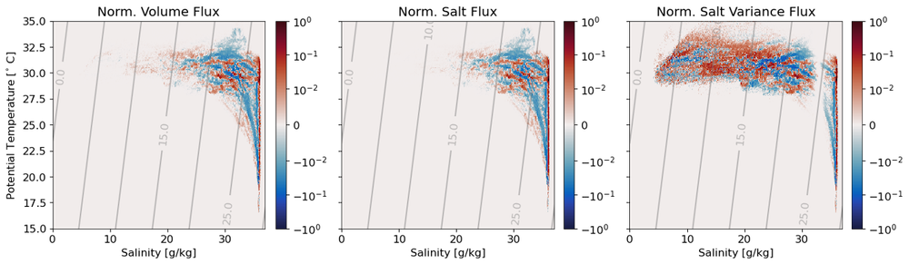
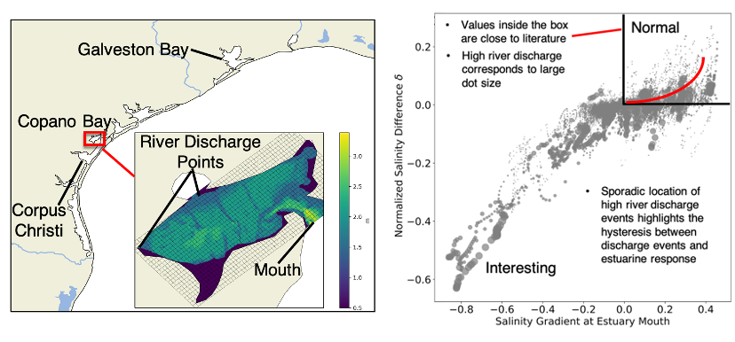

projects
My research uses numerical simulations to characterize the dynamics of estuarine and coastal flows. My PhD dissertation focuses on quantifying numerical mixing in realistic and idealized simulations of the Texas-Louisiana continental shelf in the northern Gulf of Mexico. Numerical mixing is a type of numerical error found in ocean models due to the discretization of tracer transport by currents. Much work has been done to understand numerical mixing in idealized simulations, but less so in realistic models. I use the Regional Ocean Modeling System (ROMS) for my simulations, which has been a favorite tool in the estuarine and coastal ocean modeling community for over 20 years. I am also associated with the NSF-NERC SUNRISE project, which aims to create a unified dynamical description of near-inertial motions, submesoscale processes, and their impacts on turbulent mixing.
High-resolution modeling of the Texas-Louisiana shelf
The TXLA model covers the entire continental slope and is mainly used for investigations of shelf processes, which are heavily influenced by discharge from the Mississippi and Atchafalaya rivers. We are using a high resolution nested implementation of the TXLA model developed by Daijiro Kobashi to study submesoscale processes. The movie above shows plots of the native TXLA model in the left column and a nested version on the right of surface salinity (top), horizontal salinity gradient magnitude (middle), and normalized vorticity (bottom). The salinity gradient magnitude can be used to infer information about numerical mixing, with larger gradients corresponding to larger numerical mixing (Schlichting et al., 2023). The relative vorticity provides an estimate of the flow's rotation about the vertical axis, allowing us to study how these frontal eddies evolve in time. The nested model has five times the horizontal resolution of the coarse model, which is indicated by the black box in the figure.
High-resolution idealized modeling
The simulation shown above is a modified version of the base case described in Hetland (2017) Journal of Physical Oceanography. The model is used to explore the formation of baroclinic instabilities over a sloping bottom in an idealized framework and is based off the dynamical conditions observed over the TXLA shelf. More broadly, baroclinic instabilities are a type of fluid instability that act as a primary generation mechanism for mesoscale eddies in the ocean and shapes the formation of cyclones and anticylones in the atmosphere. The above video shows an unforced, stratified coastal shelf that grows baroclinically unstable, leading to the development of numerous eddies. This is seen in not only the salinity field, but the vertical relative vorticity, which provides an estimation of the fluid's rotation about the vertical axis. These eddies have strong salinity gradients, which correspond to areas where the salinity changes rapidly in space. These sharp gradients are hard for models to resolve, and generate spurious numerical mixing. I am using the idealized model to understand how numerical mixing impacts the salinity field, with the goal of applying the knowledge gained to the TXLA model.
Total Exchange Flow (TEF) in the coastal ocean
TEF was originally developed by Parker MacCready for looking at tracer fluxes and mixing for estuaries. TEF involves taking a control volume or transect, and binning corresponding tracer fluxes in a coordinate of your choosing. In the Gulf, the salinity is the primary tracer that controls the density structure close to the plume but temperature can become important when river input is low. The figure shown above is a temperature-salinity (TS) diagram of the total volume flux, salt flux, and salinity anomaly squared into and out of the nested grid integrated over the entire simulation. It is normalized by its maximum value so you can clearly see how complex the flow structure is if you don't average it. Note that the salinity anomaly squared flux spans a much larger salinity range because we remove the effects of the mean salinity to quantify the salinity anomaly. In the future we also plan to look at mixing in both salinity and temperature space!
Copano Bay salinity dynamics
As an REU student, I worked on characterizing the salinity structure of Copano Bay, an inverse estuary on the Gulf Coast. The inverse circulation causes some interesting dynamics to occur. For example, plotting the normalized salinity difference versus the salinity gradient at the estuary mouth reveals just how weird the salinity structure is. this project is currently being worked on by Tianxiang Gao
Storm surge in estuaries
During my undergrad, I worked on the Sensing Storm Surge Project, which investigated storm surge in several Maine estuaries. I helped set up and maintain the citizen science network. The first picture is me prepping a mooring in Bass Harbor. The next figure is taken from our Ocean and Coastal Management publication that shows observed surge in two estuaries, which demonstrates the effects of channel convergence on surge height.